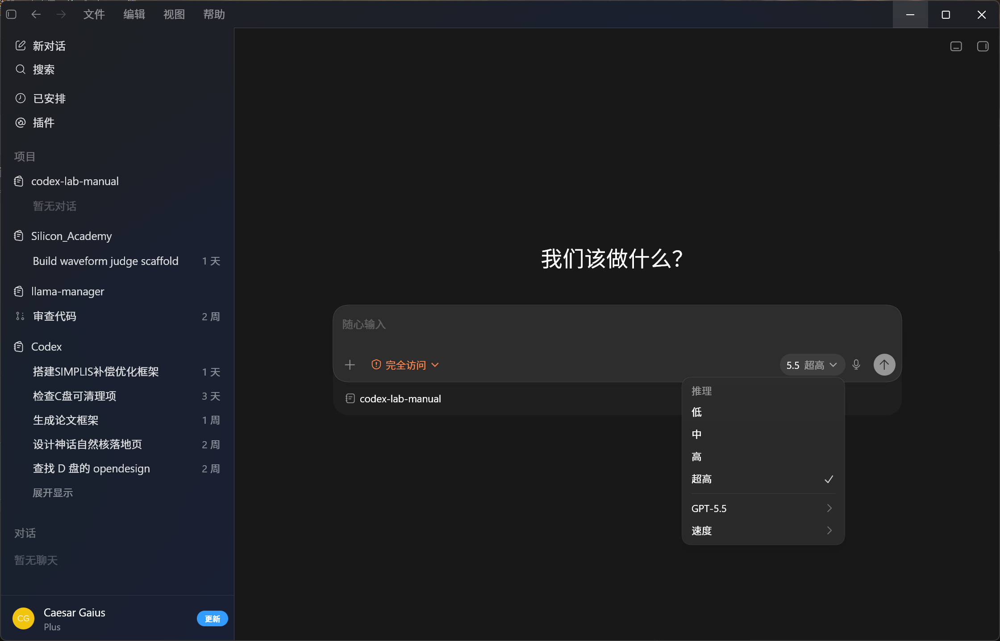

先备好工作台，再装 Codex
Codex 不是只能聊天的窗口，它会读项目、跑命令、装工具、检查结果。Windows 上先把基础软件装齐，再从微软商店装 Codex 桌面 App，最后用 Codex++ 接增强层和中转站。
Agent 工作台基础软件
先不用把这些工具都学会，装好并能被系统识别就够了。后面让 Codex 做事时，它会调用这些软件完成下载、验证、整理文件和连接 GitHub。
| 软件 | 为什么要装 | 建议 |
|---|---|---|
| PowerShell 7 | Windows 下最常用的自动化外壳，Codex 跑检查、处理文件、读日志会频繁用到。 | Windows 自带 PowerShell 也能用；建议补装新版 pwsh，少一些兼容坑[16]。 |
| Git | 拉 GitHub 仓库、查看改动、回退自己的修改、安装很多开源 Skill 都离不开它。 | 装 Git for Windows；安装后能在终端里识别 git 即可[17]。 |
| GitHub CLI | 让 Codex 更方便地查 issue、看 PR、登录 GitHub、下载或管理仓库。 | 装好 gh 后登录一次 GitHub；以后可以直接让 Codex 帮你处理仓库工作[18]。 |
| Node.js LTS | 很多网页工具、插件、MCP、前端项目和自动化脚本都依赖 Node.js。 | 选 LTS 版，不追最新 Current；装好后 node 和 npm 都应可用[19]。 |
| Python | 数据处理、批量改文件、论文/实验脚本、PDF/表格工具经常会用 Python。 | 从 Python.org 或 Python Install Manager 安装；记得勾选加入 PATH，或确认 py 命令可用[20]。 |
| VS Code | 不是必须，但适合看 diff、改文档、打开项目目录；和 Git、终端配合顺手。 | 装 User Installer 即可；安装后重开终端，确认 code . 能打开当前目录[21]。 |
| 7-Zip / 解压工具 | 处理 GitHub Release、数据包、日志包、模型或仿真结果时会用到。 | 按需安装。能右键解压常见压缩包就足够。 |
装完后开一个新会话，说：“请只读检查我的 Windows agent 工作台是否齐全：PowerShell、Git、GitHub CLI、Node.js、Python、VS Code。不要安装任何东西，只告诉我缺什么。”
第一步：装 Codex 桌面 App（微软商店）
这是 OpenAI 官方发布、最省心的途径，应用约 1.4 GB[2]。
- 打开 Microsoft Store，搜索框输入
Codex。 - 认准发布者 OpenAI：找到开发者/发布者标注为 OpenAI 的官方应用（链接
apps.microsoft.com/detail/9plm9xgg6vks），点击"获取/安装"[2]。 - 等待安装完成。首次启动会请求 OpenAI 官方服务，国内网络下可能需要开代理才能进入主界面[11]——这一步我们用 Codex++ 接中转站后就能绕开。
Windows 11 推荐；Windows 10 v1809+ 也可（需现代控制台 ConPTY）。首次初始化沙箱需要管理员权限[1]。
第二步：装 Codex++（增强层 + 中转站入口）
Codex++ 是开源启动器，不修改 Codex 原始安装文件，通过 Chromium DevTools Protocol 注入增强脚本[10]。我们需要它解决两个问题：API Key 模式下解锁插件市场、以及接入第三方中转站。
- 下载安装包：访问 GitHub Releases，下载 Windows 版
CodexPlusPlus-*-windows-x64-setup.exe[10]。 - 运行安装：双击 setup 安装，会创建桌面和开始菜单快捷方式。
- 认识两个入口：
Codex++——静默启动器，只负责拉起 Codex 并注入增强功能，不显示界面。Codex++ 管理工具——Tauri 控制面板，用来配置中转、开关增强、管理脚本[10]。
装好 Codex++ 后，不要再直接点 Codex App 的图标，改点 Codex++ 启动器——只有通过它启动，增强功能和中转注入才会生效[10]。
沙箱安全模式（一次配置）
Windows 下 Codex 会受沙箱和审批模式约束。简单理解：它不是想读哪里就读哪里、想跑什么就跑什么。遇到“读不到目录”或“需要额外权限”时，先不要慌，让 Codex 解释它缺什么权限，再按提示添加项目目录或切换审批模式[1]。
“请检查当前 Windows 沙箱和审批状态。不要修改配置，先告诉我为什么读不到目录，以及最小需要开放哪个项目路径。”
验证安装
从 Codex++ 启动 Codex，进入任一项目目录，先做一个只读任务确认环境通：

在会话里输入 /status。如果能看到模型、Provider、工作目录和认证状态，说明本体和增强层都就位了。然后可以问一句：“请只读分析当前项目结构，不要修改任何文件。”
本章只列最简路径。若微软商店不可用，可改用 winget install Codex -s msstore，效果等同[1]。